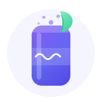
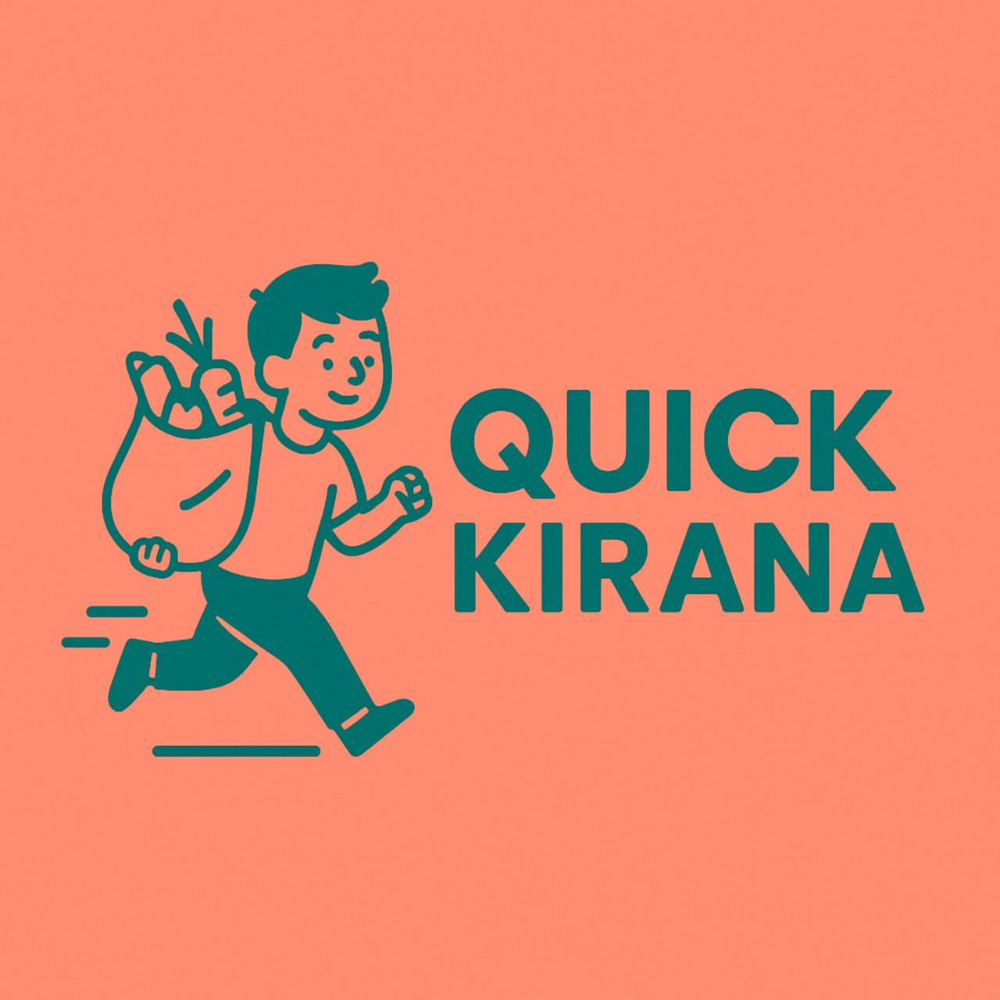

01. About Me

I'm a Data Scientist / AI Engineer based in Mumbai, India, with 2+ years building scalable, production-grade AI systems end-to-end.
My journey spans across Machine Learning, Big Data Engineering, Knowledge Graphs, and Agentic AI. I've scaled POI pipelines from 23M to 220M records across 38 countries, cut geospatial mapping from 1 week to 2.5 hours, and integrated an 83M+ node knowledge graph with a LangGraph search agent.
I graduated with a B.Tech (Honors) in Electronics and Communication Engineering from IIIT Sricity with a CGPA of 8.02, and have been recognized as Best Employee at Infinite Analytics.
02. Skills & Expertise
Languages
ML & AI
Agentic AI
Big Data
Backend & APIs
Databases
Graph & Geospatial
Cloud & MLOps
Observability
Impact At a Glance
03. Experience
Data Scientist / AI Engineer
Infinite Analytics
POI Ingestion & Data Scaling
- Consolidated POI crawling, ingestion & validation pipelines (RabbitMQ, Redis, MongoDB, FastAPI), expanding coverage from 23M POIs across 4 countries to 220M across 38 countries
- Improved POI-type mapping accuracy from 83% to 86.7%, replacing a 51-model LightGBM cascade with a unified DistilBERT trained on 2.5M POIs at 0.005s inference latency
- Cut geospatial error rates from 18% to 14% via plus-code mappings and triangular normalization
- Shortened Point-to-Polygon mapping from 1 week to 2.5 hours with Apache Sedona (partition-aware pre-join) and Apache Iceberg
Sherlock Agentic Space: Multi-Agent Operations Platform
- Migrated Sherlock AI from a monolithic LangChain Customer Success agent to a LangGraph multi-agent system with 7 specialists, tool calling, and persistent memory, achieving 10x throughput, 31% lower token cost, and responses from 8-12s to 3-5s
- Extended the platform into a suite of internal agents, Customer Success, Scrum Master, Sales, Marketing, HR, and Product, fronted by a single Flask dashboard with persona-routed search and RAG retrieval
- Strengthened agents with plan-aware guardrails, deterministic IDs, and an overlay model, driving 12% higher customer retention, 18% more qualified leads, and 15% LinkedIn channel growth
POI Knowledge Graph + LangGraph Search Agent
- Constructed a 15-node-type, 14-relationship Neo4j Knowledge Graph over 83M+ POIs, enabling Graph RAG and reasoning across structured and unstructured enterprise data
- Generated graph embeddings via Node2Vec, FastRP, HashGNN, and GraphSAGE (Graph Data Science), achieving 8x speedup in person resolution and 6–15x in POI ingestion
- Integrated an autonomous LangGraph search agent over hybrid Graph + Vector RAG, served via a FastAPI SSE streaming chat with 22 tools and a clarify-first protocol
- Monitored with Langfuse, Datadog & New Relic; deployed through Docker, Jenkins CI/CD, and Kubernetes
Research Intern
DRDO (Defence Research and Development Organisation)
sEMG Signal Analysis & Gait Modeling
- Improved preprocessing and symbolization of sEMG data, yielding a 20% increase in data quality
- Trained deep learning models on IMU and sEMG walking data to classify 7 gait phases with 92% accuracy
- Applied Symbolic Transfer Entropy (sTE) to study muscle interactions, identifying a 25% rise in inter-muscle information transfer linked to walking speed
Internship Manager
BITS Pilani Collaboration
Scrum Master & Project Manager
- Managed a cohort of 5 BITS Pilani interns during an 8-week program
- Directed task allocation, sprint planning, and progress tracking
- Guided interns on technical and workflow best practices
05. Achievements
Best Employee Award
Feb 2024 — May 2025
Recognized for leading 2 of 3 high-impact projects that expanded business coverage from 4 to 38 countries — spanning Data Engineering, Knowledge Graph development, and GenAI integration.
Climate Change Grand Challenge
Nasscom & Telangana Government
Ranked among the top 40 out of 7000+ teams nationwide. Built a predictive framework for heatwave events and Air Quality Index in Tier-2 cities.
IEEE Secretary
IIIT Sricity — Mar 2023 — Apr 2024
Coordinated travel and lodging for 100+ attendees at the ESDC Conference. Managed logistics for an event rated 4.5/5 by participants.
06. Education
Indian Institute of Information Technology, Sricity
B.Tech (Honors), Electronics and Communication Engineering
Dec 2020 — Apr 2024
01. The Builder's Mindset
“Don't worry about failure; you only have to be right once.”
— Drew Houston, Dropbox
Same age as the Zepto founders. Watching what they'd built flipped a switch — why not me? — and Ghazal Alagh (Mamaearth) made the path feel real, not theoretical.
The spark came from podcasts; the addiction came from doing. The second I started researching, talking to people, and building, it hit different — a real rush. So I kept building, kept shipping, kept learning.
Hard work in the right direction has been my bet for years. Still is.
02. The Ventures

Prebiotic Soda
A healthy, low-sugar soda for India's emerging gut-health market — inspired by Olipop.
Read the story
Quick Kirana
Turn neighbourhood kirana stores into dark stores for fast, local grocery delivery.
Read the storyOrbit (Evigo)
An asset-light, all-electric bike-taxi platform for India. Captains rent, we route, riders save up to 30%.
Read the story03. The Timeline
The first spark
Prebiotic Soda
The idea is born — after watching the Zepto founders and Mamaearth's Ghazal Alagh on two separate podcasts, I start chasing a healthy prebiotic soda for India.
Expert outreach
Prebiotic Soda
Cold-reach 30+ R&D scientists, flavorists and formulators to shape the formulation.
First taste batch
Prebiotic Soda
Run the first manufacturer taste-test batch — promising on paper, short on taste.
Second taste batch
Prebiotic Soda
Iterate the recipe with the manufacturer; taste still doesn't land.
Called it — and pivoted
Prebiotic Soda → Quick Kirana
Stop the soda — India's fiber-soda market isn't ready yet — and turn toward the kirana / quick-commerce problem.
Community pilot
Quick Kirana
Run a WhatsApp + door-to-door pilot in my building — 49 interviews, first orders, and the honest 49→1 funnel.
Orbit — first pilot
Orbit (Evigo)
First real rides on the road — evening runs from BKC to nearby railway stations.
Orbit — second pilot
Orbit (Evigo)
More evening BKC → station rides, refining matching and timing.
Orbit — street marketing
Orbit (Evigo)
Handed pamphlets to Rapido riders at Kurla station in the morning rush — recruiting the first captains and riders. Pre-launch and live.
04. Inside Each Venture
Prebiotic Soda
A gut-health soda for India · solo, with friends on research
The Spark
- US health media was buzzing about dietary fiber; brands like Olipop, Poppi, Culture Pop & Wild Wonder were booming on prebiotic sodas.
- Olipop's founder-led research story convinced me India's premium, health-conscious market was ready for a home-grown version.
What I Built
- Designed a recipe around inulin (chicory root) and the Bacillus subtilis probiotic — non-GMO, no refined sugar or artificial sweeteners, sweetened only with organic fruit juice.
- Wrote a full product + market plan under a “Svastha” (healthy body / mind / environment) philosophy, benchmarked against every major global prebiotic soda.
How I Validated
- Cold-reached 30+ R&D scientists, flavorists and formulators on LinkedIn; a few engaged and helped shape the formulation.
- Partnered with a manufacturer to run 2 taste-test batches to check whether the concept could actually taste good.
Why It Stalled
- Taste never cracked — both batches fell short, and a Bangalore Olipop-clone was visibly struggling with the exact same problem.
- India's curd/Yakult culture meant the fiber-soda category wasn't ready; friends and early signals pointed the same way. I chose to stop rather than push a product I didn't believe in yet.
What I Learned
- Tell people your idea early. I stayed quiet too long — sharing sooner would have surfaced the taste and timing problems faster.
- For a consumer product, the product itself is the strategy: without taste, no story or branding matters.
Quick Kirana
Dark-kirana quick commerce · with Samyak Bansal
The Spark
- I watched a Haldiram's distributor take next-day orders at a local kirana and thought: why is this not a 10-minute app?
- Reports of ~2 lakh kiranas shutting down due to quick commerce framed the opportunity: defend kiranas instead of replacing them.
What I Built (the model)
- A “dark kirana” model: use existing kirana shops as micro-fulfilment nodes, saving the 5–10% of revenue quick-commerce burns on dedicated dark stores.
- Worked out detailed unit economics (cost-per-order, last-mile, margins), SKU strategy (90% of baskets in ~1,500 SKUs), and used Sherlock POI data on 14,325 grocery stores to map supply.
How I Validated
- Ran a real pilot in my own 14-floor, 3-block community — a WhatsApp ordering group plus door-to-door interviews.
- Logged and analysed 49 participants: 65% joined the group, ~41% said they'd order via an app, and we took our first ~4 orders (₹80 AOV).
Why It Stalled
- Pricing couldn't beat Zepto — a ₹180-MRP laddu we sold at cost was ₹110 on Zepto, so we couldn't win on value.
- Rider economics & ops — paying a rider ~₹2,000/day needs 5–6 committed shops; kiranas had no inventory/barcode systems, and fresh produce sells from carts, not stores.
- The gut-punch: in a 93-member group, 70 read our post and only 1 joined — the community even rejected us for being tenants.
What I Learned
- Target the right customer. Our pitch ("help kiranas") didn't move people — they switch for better price, convenience or freshness, not charity.
- Unit economics decide the game. In quick commerce, low AOV and last-mile cost quietly kill ideas that look great on a slide.
- Interest is not intent. 49 friendly conversations converted to a single real order — only orders count.
Orbit · Evigo
All-electric bike-taxi platform for India · founder
The Spark — Why Now
- India spends ₹3,800 crore a day importing oil. Indian Railways already electrified the long haul (95% electric, 35–50% lower operating cost) — commercial two-wheelers are next.
- The whole petrol bike-taxi loop is broken: captains pay to work, riders pay surge, and regulators are in court. The 2026 push toward a legal EV bike-taxi framework is a literal description of what Orbit is.
What I Built
- An asset-light, EV-only platform — I don't buy bikes, I orchestrate the network, partnering with fleets like Zypp, Hala & Eveez (multi-fleet from day one).
- Shipped a full working stack: 3 Flutter apps (rider, captain, admin) on a Spring Boot + MySQL + Redis backend deployed on Fly.io (Mumbai) — with KYC, audit logs, in-app SOS and a safety-flag engine already live.
- Built the per-trip carbon ledger (every km logs CO₂) as a future credit-revenue stream — not bolted on later.
Go-To-Market — The Andheri Power-Loop
- First cluster is mapped: MIDC Metro ⇄ SEEPZ, a 2.5–3 km route that's 8–12 min by bike vs a 25–35 min bus ride.
- Every ride in the loop is under 3 km → 0% commission; feeder pockets keep each drop-off <800 m from the next pickup. Recruit existing EV riders first, geo-fenced, profitable on day one.
- Field-validated first-hand at Zypp (Hyderabad), Hala & Eveez branches — rentals, repair and fleet limits verified, not assumed.
Pilot Log — live on the street
- 5 Jun 2026 (Fri) — first pilot. Ran evening rides from BKC to nearby railway stations — the exact commuter pocket Orbit is built for.
- 9 Jun 2026 — second pilot. More evening BKC → station runs, sharpening matching and timing.
- 10 Jun 2026 — street marketing. Handed pamphlets to Rapido riders at Kurla station in the morning rush to pull in the first captains and riders.
The Moat
- Rider-first protections (dead-km subsidy, cancellation shield) that Rapido can't copy without re-pricing its petrol fleet.
- Multi-fleet supply + a carbon-credit ledger from day one, and — unlike most pre-launch competitors who have a Figma file — a working, deployed app.
Where It Stands
- Backend live on Fly.io (Mumbai), three apps shipped end-to-end, first pilot cluster mapped — currently in pre-launch, applying every lesson from the soda and kirana experiments.
- This is the venture where customer discovery, unit economics and "build only what you've validated" finally compound into something real.
05. Lessons Learned
Tell people early
My biggest soda mistake was staying quiet. Sharing the idea early surfaces fatal flaws — taste, timing, pricing — while they're still cheap to fix.
Interest ≠ intent
49 warm interviews became exactly one real order. Until someone pays, you've measured politeness, not demand.
Unit economics rule
Couldn't beat Zepto's ₹110 laddu. In low-AOV businesses, last-mile cost and pricing decide everything — long before product.
Frame for the customer
"Help local kiranas" didn't convert. People switch for price, convenience and trust — pitch the benefit they actually feel.
Market timing matters
India wasn't ready for fiber sodas yet. A right idea at the wrong time behaves exactly like a wrong idea.
Knowing when to stop
Reading the data and walking away without ego is a skill. Each stop made the next experiment sharper.
06. Built With
I don't build alone — friends, college mates and early teammates jumped in on research, field work, engineering and honest reality-checks across all three ventures.
Naman Sharma
Orbit · collaborator
Helped build out the Orbit EV bike-taxi venture with me.
Anurag
Orbit · early believer (ex)
An early teammate who dug in, then stepped away after spotting driver-side concerns — a useful signal in itself.
Harish
Orbit · inputs (ex)
Former teammate who gave plenty of early input on the model.
Saketh
Orbit · inputs
College friend who pressure-tested ideas and gave lots of input.
Gana Jayanth
Orbit · inputs
Gave plenty of sharp input on the Orbit bike-taxi model.
Jayanth
Soda · research
College friend who dug into the soda market and championed the product.
Samyak Bansal
Quick Kirana · co-pilot
Ran the community pilot & door-to-door interviews with me (Block C).
Hemanth
Soda · research
Helped map competitors and pressure-test the soda concept.
30+ experts
Soda · cold-reached network
Food scientists, flavorists & formulators who shaped the formulation.
07. Get In Touch
I'm always open to discussing new projects, opportunities, or collaborations in data science and AI. Feel free to reach out!
Say Hello